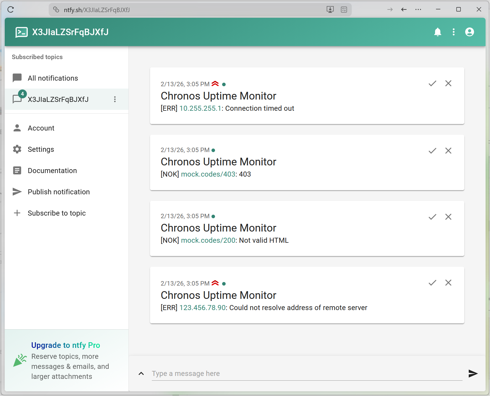

Sending Alerts with POST Requests
Goal: Learn how to send POST HTTP requests and set request headers.
Source code: chapter6/src/uptimemon.nim
How cool would it be to get notified about a service being down to your phone? This way, you can launch the program and just go on with your business and not constantly monitor the terminal window.
ntfy is a service that allows to send push notifications with POST requests. Let's use it to send notifications when our program detects a [NOK] or [ERR].
Set Up ntfy
- Go to ntfy.sh/app.
- Click on Subscribe to topic in the sidebar, click GENERATE NAME in the popup, copy the generated name, and SUBSCRIBE. We'll use this unique topic name to send the notifications to.
- Click on GRANT NOW to allow push notifications from your browser.
- Keep the browser open.
Add Alerts
Here's the version of the program with alerting capabilities:
import std/sequtils
import chronos/apps/http/httpclient
const
ntfyTopic = "<YOUR_NTFY_TOPIC_NAME>"
uris = @[
"https://duckduckgo.com/?q=chronos", "https://mock.codes/403",
"http://10.255.255.1", "https://html.spec.whatwg.org/",
"https://mock.codes/200",
]
proc sendAlert(
session: HttpSessionRef, message: string, priority = 3
) {.async: (raises: [CancelledError]).} =
let
headers = {"Title": "Chronos Uptime Monitor", "Priority": $priority}
body = message.stringToBytes()
request = HttpClientRequestRef.new(
session,
"https://ntfy.sh/" & ntfyTopic,
meth = MethodPost,
headers = headers,
body = body,
).valueOr:
echo "[WRN] Failed to send alert: " & error
return
try:
let response = await request.send().wait(5.seconds)
await response.closeWait()
except HttpError, FuturePendingError, AsyncTimeoutError:
echo "[WRN] Failed to send alert: " & getCurrentExceptionMsg()
finally:
await request.closeWait()
proc findMarker(
bodyReader: HttpBodyReader
): Future[bool] {.async: (raises: [AsyncStreamError, CancelledError]).} =
const
marker = "<html"
readLimit = 10 * 1024
var
totalRead = 0
sample = newString(len(marker) - 1)
found = false
proc findMarkerInSample(data: openArray[byte]): (int, bool) =
if len(data) == 0:
(0, false)
else:
sample = sample[^(len(marker) - 1) .. high(sample)]
sample &= bytesToString(data)
found = marker in sample
totalRead += len(data)
(len(data), found and totalRead <= readLimit)
await bodyReader.readMessage(findMarkerInSample)
found
proc check(session: HttpSessionRef, uri: string) {.async: (raises: [CancelledError]).} =
let
request = HttpClientRequestRef.new(session, uri).valueOr:
echo "[ERR] " & uri & ": " & error
return
response =
try:
await request.send().wait(5.seconds)
except HttpError, AsyncTimeoutError:
echo "[ERR] " & uri & ": " & getCurrentExceptionMsg()
finally:
await request.closeWait()
try:
if response.status == 200:
let
bodyReader = response.getBodyReader()
markerFound =
try:
await bodyReader.findMarker()
finally:
await bodyReader.closeWait()
if markerFound:
echo "[OK] " & uri
else:
let message = "[NOK] " & uri & ": Not valid HTML"
echo message
await session.sendAlert(message)
else:
let message = "[NOK] " & uri & ": " & $response.status
echo message
await session.sendAlert(message)
except HttpError, AsyncStreamError:
let message = "[ERR] " & uri & ": " & getCurrentExceptionMsg()
echo message
await session.sendAlert(message, 4)
finally:
await response.closeWait()
proc check(uris: seq[string]) {.async: (raises: []).} =
let
session = HttpSessionRef.new()
futures = uris.mapIt(session.check(it))
try:
await allFutures(futures)
except CancelledError:
await cancelAndWait(futures)
finally:
await session.closeWait()
when isMainModule:
waitFor check(uris)
As usual, let's examine the changes part by part.
const
ntfyTopic = "<YOUR_NTFY_TOPIC_NAME>"
Define a new constant for the ntfy topic name you copied earlier. Replace YOUR_NTFY_TOPIC_NAME with the actual value you copied from ntfy.
proc sendAlert(
session: HttpSessionRef, message: string, priority = 3
) {.async: (raises: [CancelledError]).} =
let
Define a new async function that will do the request sending to ntfy. We'll send those requests in the same session so we pass it to the function as session.
message is the text we want to send in the notification.
priority is a number that defines the style of the notification in ntfy. ntfy recognizes five priority levels from 1 to 5: the higher the number, the "scarier" the message.
headers = {"Title": "Chronos Uptime Monitor", "Priority": $priority}
ntfy uses headers to customize notifications, e.g. Title and Priority.
Here we set the headers as an arrays of tuples using Nim's shortcut syntax.
body = message.stringToBytes()
Requests body must be a sequence of bytes so we convert our text message using stringToBytes.
request = HttpClientRequestRef.new(
session,
"https://ntfy.sh/" & ntfyTopic,
meth = MethodPost,
headers = headers,
body = body,
).valueOr:
echo "[WRN] Failed to send alert: " & error
return
Create the request with the necessary properties. meth is the request's HTTP method.
try:
let response = await request.send().wait(5.seconds)
await response.closeWait()
except HttpError, FuturePendingError, AsyncTimeoutError:
echo "[WRN] Failed to send alert: " & getCurrentExceptionMsg()
finally:
await request.closeWait()
If the request was successfully created (request.isOk), we try to send it with send() and discard it (with closeWait).
If the request couldn't be sent (e.g. ntfy is unavailable), we print a warning.
proc check(session: HttpSessionRef, uri: string) {.async: (raises: [CancelledError]).} =
let
request = HttpClientRequestRef.new(session, uri).valueOr:
echo "[ERR] " & uri & ": " & error
return
response =
try:
await request.send().wait(5.seconds)
except HttpError, AsyncTimeoutError:
echo "[ERR] " & uri & ": " & getCurrentExceptionMsg()
finally:
await request.closeWait()
try:
if response.status == 200:
let
bodyReader = response.getBodyReader()
markerFound =
try:
await bodyReader.findMarker()
finally:
await bodyReader.closeWait()
if markerFound:
echo "[OK] " & uri
else:
let message = "[NOK] " & uri & ": Not valid HTML"
echo message
await session.sendAlert(message)
else:
let message = "[NOK] " & uri & ": " & $response.status
echo message
await session.sendAlert(message)
except HttpError, AsyncStreamError:
let message = "[ERR] " & uri & ": " & getCurrentExceptionMsg()
echo message
await session.sendAlert(message, 4)
finally:
await response.closeWait()
Finally, we add calls to sendAlert in the check branches for [NOK] and [ERR].
Run the code and observe alerts appearing in your browser accompanied by push notifications:

To receive the notifications on your phone, install ntfy mobile app and subscribe to the same topic.
In the final chapter, we'll see how to scale our application and add some finishing touches!